JW Time 4.0 introduit de nombreuses nouvelles fonctionnalités. Vous trouverez ici juste un résumé pour vous guider ;
le panneau Nouveautés à l'intérieur de l'application et la page dédiée collectent tous les détails.
Assistant initial, profils de congrégation et interface réorganisée.
Fenêtre multimédia avec contenu officiel, téléchargements, cache local et musique de fond.
Écran Public, écran de compteur de temps personnalisable et gestion des messages mise à jour.
Moniteur web avec contrôle local, QR et accès à distance temporaire pour la vidéoconférence.
Au premier démarrage, JW Time affiche un assistant qui collecte les paramètres essentiels avant d'ouvrir l'application.
C'est le chemin recommandé pour une nouvelle installation, car cela évite d'avoir à rechercher immédiatement chaque option
dans les panneaux de paramètres.
Langue et format: choisissez la langue de l'interface, la langue du programme et le format de l'heure.
Congrégation: Définissez le nom du profil initial, utile si vous gérez plusieurs profils à l'avenir.
Réunions: indique les jours et heures de début du compte à rebours automatique.
Options de réunion: activez, si nécessaire, l'adaptation des durées et la pause automatique entre les parties.
Écrans: Configurez l'écran du compteur de temps et l'Écran Public sur les moniteurs appropriés.
À la fin de l'assistant, vous pouvez ouvrir JW Time et compléter uniquement les options les plus avancées, telles que Média, Serveur web,
Enregistrements et sauvegardes.
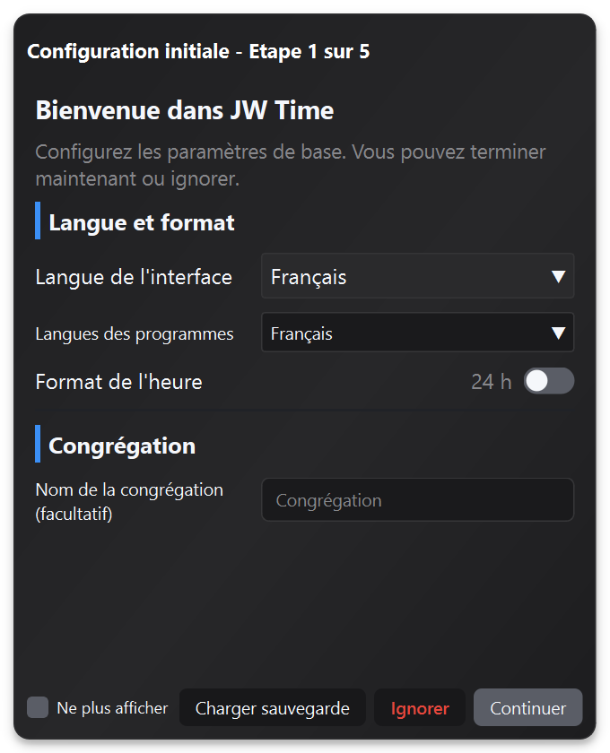
Vérification rapide si vous ignorez l'assistant ↑ Sommaire
Si vous fermez ou ignorez l'assistant, vous pouvez configurer manuellement les éléments essentiels à partir des paramètres et de la fenêtre principale.
Cette liste de contrôle sert également de vérification rapide avant la réunion.
Langue, profil et programme
Allez à section 9 · Général pour la langue et le format de l'heure, puis à
section 10 · Congrégations si vous devez créer ou sélectionner un profil. Vérifiez que
La playlist chargée correspond à la semaine et à la langue souhaitée.
Ouvrez la section 4 · Fenêtre Média pour vérifier les chansons, vidéos et images de la semaine.
Les options de cache, de qualité et d'arrière-plan se trouvent dans la section 13 · Médias.
Minuteries, messages et enregistrement
Utilisez la fenêtre principale pour démarrer les minuteries, envoyer des messages au compteur de temps et ouvrir le panneau REC.
Si vous enregistrez des réunions, cochez d'abord les options dans section 16 · Enregistrements.
L'écran principal est le cœur de l'application. De là, vous pouvez démarrer, gérer et surveiller toutes les minuteries
de la réunion, visualiser les informations clés telles que le titre de la partie en cours, l'horloge et l'heure
résidus, ainsi que la vérification des messages et notifications importants.
Zones principales
1.1 · Titre de la pièce et horloge
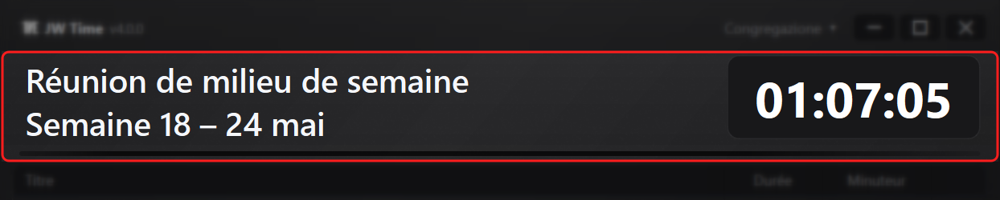
Le titre de la pièce en cours est affiché sur la ligne supérieure, tandis que l'horloge avec
l'heure actuelle ou, lorsque vous démarrez un chronomètre, le compte à rebours du temps restant. Au format 12 heures apparaît également
Suffixe AM/PM en plus petite taille pour améliorer la lisibilité.
1.2 · Tableau des minuteries
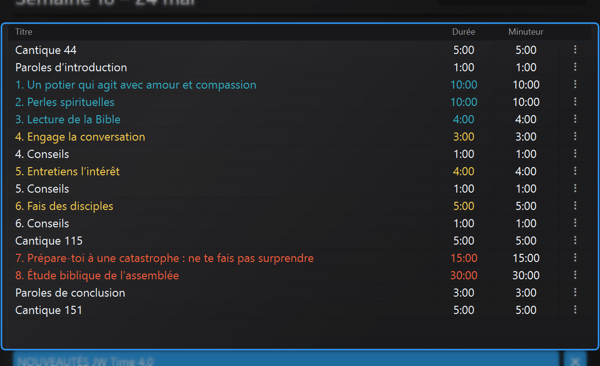
Répertorie l'ordre du jour de la réunion (titre, durée, statut). Le contenu se charge automatiquement en fonction du jour
sélectionné : l'application reconnaît s'il s'agit d'un Midweek ou d'un Week-end et propose le bon horaire. Pour les boutons
et les actions détaillées, voir section 3 · Manipulation des minuteries.
Si vous activez Afficher la colonne Fin dans les paramètres généraux, le tableau indique aussi à quelle heure la partie en cours et chaque partie suivante se termineraient.
Ce n'est pas une heure fixe du programme : c'est une projection mise à jour en temps réel selon l'heure actuelle, les minuteurs restants et l'écart accumulé.
1.3 · Heure de fin estimée
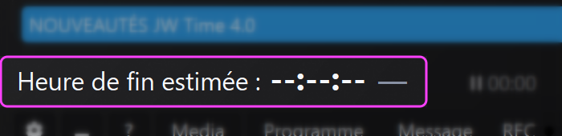
Affiche l'heure de fermeture prévue en fonction du calendrier. L'écart apparaît à côté de:
+m:ss (jaune à moins de 1', rouge au-delà) = délai
−m:ss (vert) = avance
L'heure et l'indicateur sont mis à jour en temps réel. Si les adaptatifs pour l'étude biblique / la tour de sont actifs
Garde, les durées sont recalculées pour s'adapter à l'heure de fermeture.
1.4 · Temps de pause/changement de haut-parleur
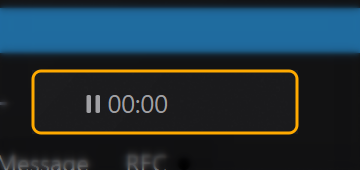
Compteur cumulatif hh:mm:ss de pauses techniques/changement de haut-parleur : additionne le temps pendant lequel le timer est
été mis en pause. Pendant la pause, le temporisateur partiel reste arrêté tandis que ce compteur augmente. Un clic
sur l'indicateur, il remet le total à zéro.
1.5 · Principales touches de gestion des minuteries
Commandes pour démarrer, arrêter et gérer les minuteries : Stop (rouge), Pause et Start/Suivant (vert).
Le bouton Pause met en pause le chronomètre partiel (le décompte reste arrêté) pendant que le temps de pause/changement
locuteur continue d’augmenter. Pour quitter la pause, appuyez à nouveau sur Pause ou passez à la partie suivante avec
Départ/Suivant : le temps accumulé est enregistré dans le compteur visé au point 1.4.
1.6 · Actualités (communications)
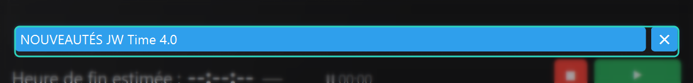
Lorsqu'il y a des communications officielles pour l'application, une boîte/alerte « Actualités » apparaît sur l'écran principal.
En cliquant dessus, vous ouvrez le panneau avec le résumé de la mise à jour.
1.7 · Outils rapides
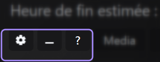
Boutons rapides pour ouvrir les paramètres, réduire ou restaurer la fenêtre et accéder à l'aide. Ils sont séparés
des modes de fonctionnement pour laisser le résultat net plus léger.
1.8 · Modes de fonctionnement
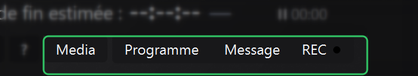
De là, vous pouvez basculer vers la fenêtre Média, la gestion des programmes, les messages et le panneau REC. Le point noir
à côté de REC indique l’état de l’enregistrement.
Cette section illustre comment charger la liste correcte pour la semaine, créer une liste manuelle si nécessaire et
Faites défiler rapidement les semaines précédentes, en cours et suivantes.
Par défaut, l'application charge automatiquement la programmation de la semaine en cours : en milieu de semaine
du lundi au vendredi et celui du week-end le samedi et le dimanche.
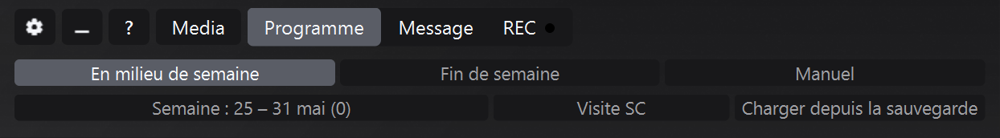
2.1 · Programmation automatique
Midweek : charge le planning de la semaine.
Week-end : chargez la programmation du samedi/dimanche en demandant la chanson pour parler en public.
2.2 · Sélecteur de semaine et aperçu du calendrier
Le bouton Semaine affiche toujours la plage (par exemple "Semaine : 20 – 26 octobre") avec un badge
qui indique le décalage par rapport à la semaine en cours (0, +1, -2, etc.). Un clic ouvre le calendrier compact pour
passez directement à la semaine souhaitée sans faire défiler plusieurs fois les boutons Précédent/Suivant.
Badge instantané : comprenez si vous regardez la semaine en cours, future ou passée.
Calendrier hebdomadaire : choisissez directement les semaines de manière pratique.
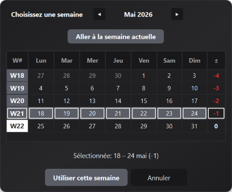
2.3 · Visiter SC
Le bouton Visiter SC, situé entre le sélecteur Semaine et Charger depuis sauvegarde, transforme la playlist lorsqu'elle est présente
la visite du surveillant de circonscription. Lorsqu'on appuie, le bouton s'allume (ON) et l'application prépare automatiquement les pièces
spéciaux prévus pour la visite.
Réunion en milieu de semaine: l'étude biblique de la congrégation est convertie en un segment fixe de 30 minutes intitulé "Visite SC".
Week-ends: Une entrée dédiée est ajoutée après l'étude Watchtower et les durées sont ajustées pour respecter l'heure de fermeture.
Couleurs et avertissements dédiés : la ligne Visit SC adopte sa propre palette et prépare la chanson finale spécifique.
Désactivation rapide : en désactivant le toggle, la table revient immédiatement à l'alignement standard sans perdre les autres modifications.
2.4 · Charger depuis une sauvegarde
Le bouton Charger depuis une sauvegarde ouvre une liste de packages enregistrés localement, triés par date, type de réunion et langue.
Il est idéal pour travailler hors ligne ou restaurer des programmes déjà préparés sur un autre PC.
Liste détaillée : chaque ligne indique la date de début de la semaine, le type (Midweek/Week-end) et la langue.
Chargement sécurisé : les packages sont vérifiés et appliqués directement à la table actuelle.
Messages clairs : si aucune sauvegarde n'est disponible, l'application affiche immédiatement un avertissement.
2.5 · Mode liste manuel
La liste manuelle est utile lorsque le planning ne provient pas du programme hebdomadaire ou lorsque l'on souhaite préparer un programme spécial.
Vous pouvez créer ou modifier des entrées via la fenêtre d'édition dédiée, en définissant le type, le titre et la durée, et enregistrer le résultat
pour le réutiliser plus tard.
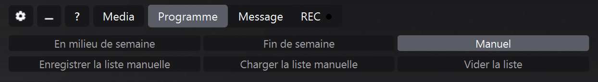
2.5.1 · Panneau manuel
Manuel: active la liste de lecture personnalisée et affiche les commandes dédiées sous le sélecteur de programme.
Enregistrer la liste manuelle: exporter la playlist actuelle vers un fichier pour la réutiliser ou la transférer sur un autre PC.
Charger la liste manuelle: importez une liste enregistrée et mettez à jour la table liée, le compteur de temps et les médias.
Effacer la liste: Efface la programmation manuelle de la semaine en cours et supprime également les médias manuels liés à ce brouillon.
2.5.2 · Créer et sauvegarder
Activer le mode manuel depuis le panneau Programme.
Utilisez les commandes de table pour ajouter, supprimer ou réorganiser des lignes ; en cas de besoin, JW Time ouvre la fenêtre d'édition vocale.
Enregistrez la liste lorsque vous souhaitez la conserver pour une autre fois.
Lorsque vous enregistrez, JW Time vous demande ce qu'il faut inclure dans le fichier .jwtimeplan.
Choisissez Programme manuel + média si vous souhaitez également transférer des fichiers locaux, des URL et des groupes depuis la fenêtre Média.
Choisissez Uniquement programmation horaire manuelle si vous n'avez besoin que de la playlist avec titres et durées.
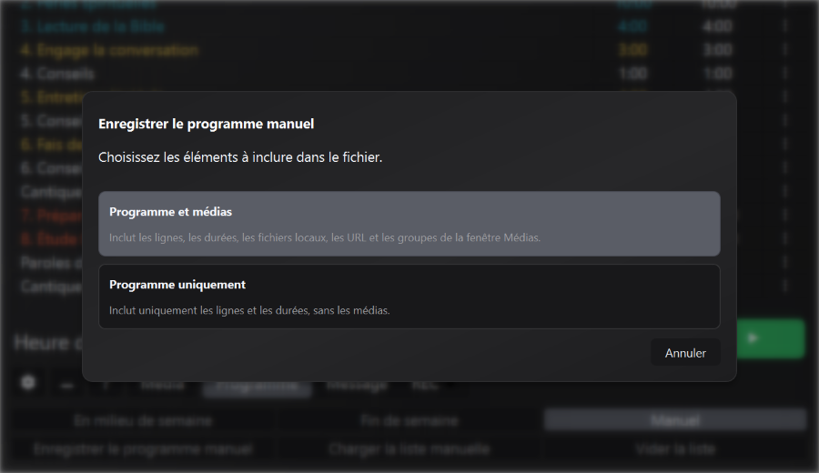
2.5.3 · Recharger ou vider une liste
Utilisez Charger la liste manuelle pour récupérer une liste de lecture enregistrée.
Si la liste contient des lignes reconnues comme des chansons ou des parties standard, JW Time applique des couleurs et un comportement cohérents.
Les fenêtres liées sont mises à jour après le chargement, donc le compteur de temps et la moyenne restent alignés sur le tableau.
Utilisez Effacer la liste lorsque vous souhaitez redémarrer à partir d'une playlist vide pour la même semaine.
2.5.4 · Médias liés
Lorsque vous attachez un média à une liste manuelle, l'enregistrement et le chargement maintiennent le lien vers le programme préparé.
Ceci est utile pour les réunions spéciales, les assemblées locales ou les programmes qui ne suivent pas la semaine standard.
Si un fichier n'est plus disponible, l'application vous avertit lorsque vous ouvrez ou utilisez la fenêtre Média, afin que vous puissiez le remplacer avant la réunion.
Pour ajouter une chanson, utilisez le menu de saisie et choisissez l'élément de chanson. Par ici JW Time
enregistre correctement le numéro de la chanson, connecte les médias disponibles et l'écran du compteur de temps adapte l'affichage
sans avoir à écrire manuellement le titre dans la ligne.
Cette section explique les principales opérations de gestion du timer — telles que l'ajout, la modification ou la suppression d'entrées —
et l'utilisation des commandes de démarrage, de saut et de réinitialisation.
3.1 · Opérations principales
Menu ligne : ouvrez les trois points à droite pour les actions disponibles sur la pièce sélectionnée.
Depuis le menu, vous pouvez démarrer la ligne ou passer à la suivante, ajouter une ligne au-dessus ou en dessous, la dupliquer, la réinitialiser ou la supprimer.
Les commandes Ajouter une ligne au-dessus et Ajouter une ligne en dessous ouvrent un sous-menu avec Chanson, Partie/Discours et Conseil.
Modifier Titre/Durée : double-cliquez sur la cellule, puis confirmer.
Formats Durée : 5 → 5h00, 1h30 → 1h30 minutes.
Démarrage et progression :
Ligne de départ démarre la partie sélectionnée.
Lorsqu'une ligne est en cours, la commande devient Passer au suivant.
Stop/Pause gérer le timer en cours d'exécution à partir de la barre inférieure.
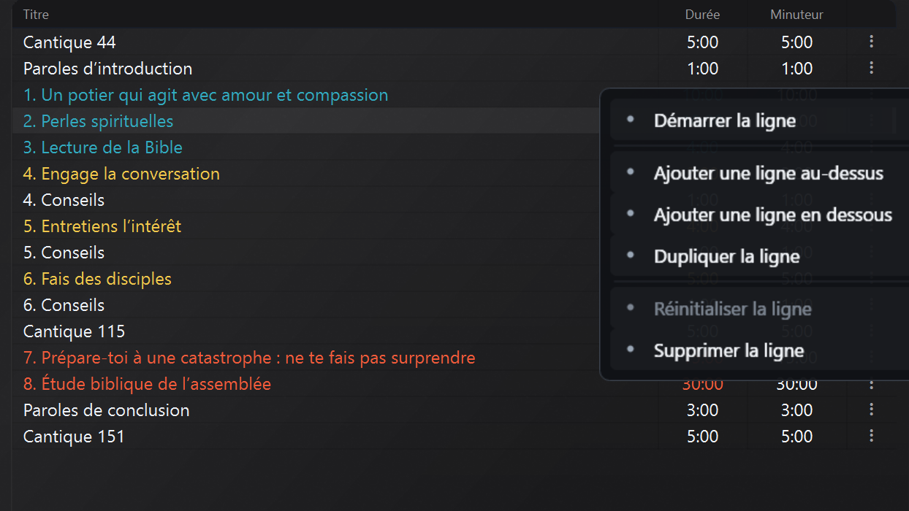
3.2 · Mises à jour en temps réel
Le timer se met à jour en permanence : le compte à rebours principal en haut indique le temps restant de la partie active,
tandis que la ligne correspondante reste en surbrillance dans le tableau. La couleur de la barre supérieure reprend la couleur
de la partie en cours.
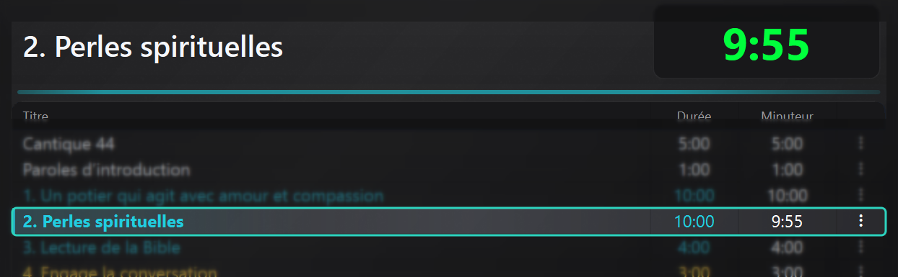
Si vous modifiez une durée ou passez à la partie suivante, l'heure de fin estimée est recalculée immédiatement. Cela permet de
pour vérifier le delta avance/retard et le temps accumulé pour les pauses ou les changements d'intervenant sans ouvrir d'autres panneaux.
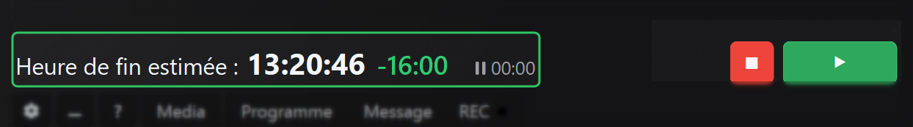
3.3 · Ajustement automatique — Étude biblique et étude de la Tour de Garde
Si l'étude biblique adaptative et/ou l'étude adaptative de la Tour de Garde sont activées dans les paramètres, l'application appropriée
dynamiquement la durée de la partie sélectionnée pour maintenir l'heure de clôture de la réunion. Problèmes d'adaptation
uniquement les parties avec option active et peut automatiquement augmenter ou réduire les minutes en fonction de l'avance/du retard accumulé.
Dans l'image, la ligne concernée est isolée et la valeur ajustée est surlignée en orange, de sorte qu'il est immédiatement clair quelle minuterie a été corrigée.
Vous pouvez toujours intervenir manuellement : l'adaptatif recalcule à partir de la nouvelle situation.
La fenêtre Média rassemble les contenus liés à la semaine : chansons, vidéos, images et références utiles à la partie.
Elle peut aider l'opérateur à préparer la réunion, à vérifier les contenus disponibles et à les lancer lorsque c'est nécessaire.
Remarque sur l'utilisation : la fenêtre Média offre à l'opérateur un outil de support pour préparer, vérifier et gérer des contenus multimédias déjà disponibles. Son utilisation pratique dépend des besoins locaux et doit toujours se faire en harmonie avec les indications de la congrégation et les dispositions. En cas de besoin technique, elle peut aussi être utilisée comme solution de support ou de réserve.
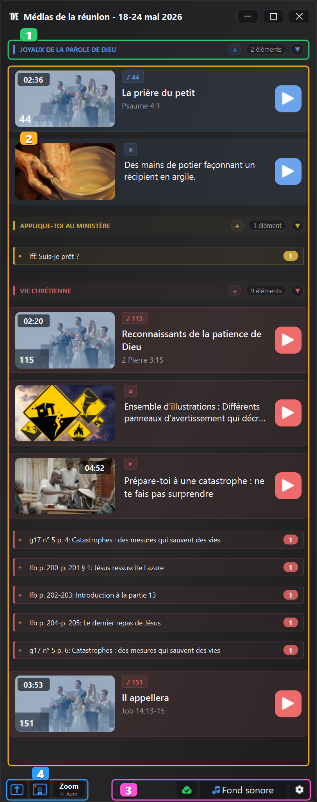
4.1 · Sections avis et médias
La zone 1 indique quand les médias officiels de la semaine ne sont pas encore disponibles hors ligne. Vous pouvez les télécharger
immédiatement ou reporter. Le même comportement peut être automatisé depuis les paramètres
13 · Médias, activant le téléchargement automatique des médias officiels.
Sous l'avis, vous trouverez les sections de la playlist, avec un titre coloré, un compteur d'éléments et des commandes rapides.
Note : le téléchargement des médias officiels exige que le réseau permette à JW Time d'accéder à jw.org et aux ressources utilisées pour les médias. Le téléchargement alternatif introduit pour les programmes n'est pas disponible pour les médias. Si des routeurs, pare-feu, DNS ou filtres de contenu bloquent les sites religieux ou l'accès de JW Time, les médias officiels peuvent ne pas être téléchargés; dans ce cas, vous pouvez utiliser des médias déjà disponibles hors ligne ou ajouter manuellement des fichiers locaux.
4.2 · Liste des contenus
La zone 2 contient des onglets avec aperçu, titre, référence et bouton de démarrage. Les couleurs reflètent les zones de la gamme,
afin que vous puissiez localiser rapidement les chansons, les images, les vidéos et les références liées à la pièce.
Dans le menu contextuel, vous pouvez marquer manuellement un élément comme utilisé ou non utilisé. Si Atténuer les médias déjà utilisés est activé, les éléments utilisés restent reconnaissables avec un style plus discret.
Les fenêtres de vidéos, d'audios et d'images officiels incluent aussi le mode Global lorsque vous devez chercher hors de la catégorie actuelle.
4.3 · Barre inférieure
La zone 3 regroupe les commandes rapides de la fenêtre Média : contenus téléchargés, prévisualisation, synchronisation,
arrière-plan et paramètres dédiés. Il reste en bas pour être accessible même lorsque la liste est longue.
4.4 · Commandes de zoom
La zone 4 rassemble les commandes de zoom de la fenêtre Média. Ils sont conçus pour ceux qui diffusent des médias même dans
vidéoconférence et travaillez avec l'Écran Public sur le moniteur de la salle.
Partage- Envoie le raccourci configuré à Zoom pour démarrer ou arrêter le partage.
Afficher/Masquer le zoom: utilisé pour afficher les intervenants ou la fenêtre Zoom sur le moniteur public. JW Time masque temporairement l'Écran Public et vous permet de voir ce qu'il y a en dessous : pour cette raison, la fenêtre des intervenants Zoom, ou un écran dupliqué avec Zoom, doit déjà être positionnée derrière l'Écran Public avant d'appuyer sur le bouton.
Zoom automatique: Active l'automatisation du zoom pour la session. Lorsque vous démarrez un média, JW Time peut automatiquement envoyer le raccourci de partage et, s'il est configuré, l'arrêter à la fin.
Avant d'utiliser ces touches, configurez un raccourci global de partage d'écran dans Zoom et entrez
la même combinaison dans la section 14 · Zoom. Si les deux raccourcis ne correspondent pas,
JW Time envoie la commande mais Zoom ne réagit pas comme prévu.
4.5 · Musique de pré-réunion et de fond
Le panneau Fond gère la musique avant la réunion et, si configuré, également après la réunion,
sans le mélanger avec les médias de la programmation. Pendant la lecture, il affiche la chanson en cours, la chanson suivante,
progression et durée.
Vous pouvez démarrer, mettre en pause, passer à la chanson précédente ou suivante, activer la lecture aléatoire et ouvrir
la liste de lecture. Les paramètres de musique, y compris le comportement automatique et les fondus, sont configurés à partir du panneau
13 · Médias.
JW Time 4.0 sépare les vues : l'Écran Public sert au contenu visible par la salle,
tandis que l'Écran du compteur de temps reste dédié à ceux qui suivent les temps.
5.1 · Écran Public
L'Écran Public affiche le compte à rebours, le message de bienvenue, l'écriture de l'année, le logo et le contenu
vues dans une fenêtre séparée.
Avant la réunion: Affiche le compte à rebours et le texte configuré.
Pendant la réunion: peut rester disponible pour du contenu public ou des scènes dédiées.
Paramètres: le moniteur, le message, le compte à rebours, le logo et la mise en page sont ajustés dans le article 11 · Réunions et dans le 12 · Écran.
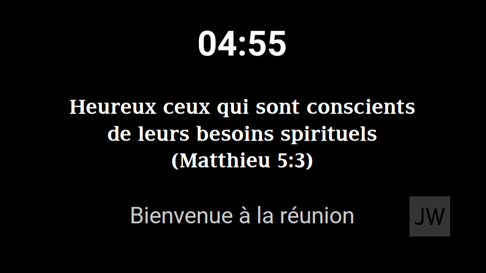
5.2 · Écran Compteur de temps
L'écran Compteur de temps affiche l'horloge, le compte à rebours de la partie en cours, les messages pour l'intervenant et les états liés à la gestion du temps.
C'est la vue la plus appropriée pour le podium, le président ou les travailleurs du temps.
Afficher sur le moniteur sélectionné ou dans la fenêtre libre.
Temps partiel actuel et informations contextuelles.
Messages en plein écran ou partiel envoyés depuis la fenêtre principale.
5.3 · Personnalisation de l'écran du compteur de temps ↑ Sommaire
L'écran du compteur de temps peut être personnalisé à l'aide du bouton Personnaliser dans le section 9 · Général.
Vous pouvez partir d'un préréglage déjà disponible ou modifier la mise en page selon vos besoins. L'Écran Public possède
ses propres paramètres dans le 12 · Écran; nous concentrons ici le travail sur la disposition du compteur de temps.
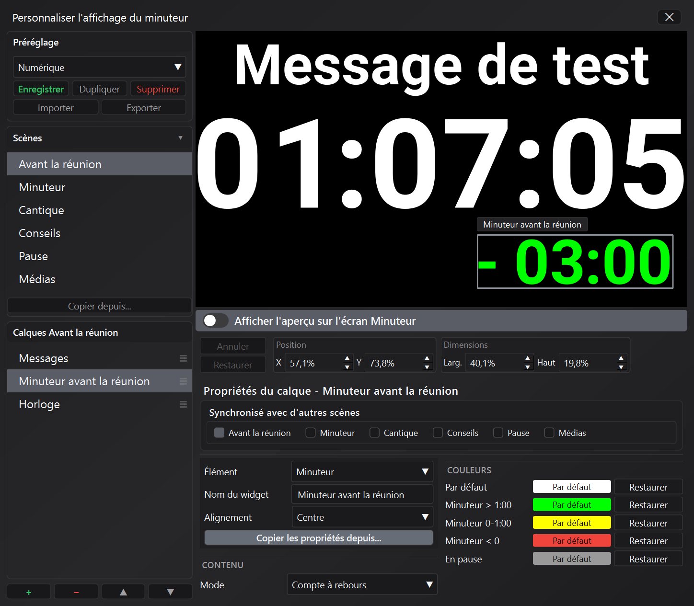
À partir d'un préréglage
Un préréglage est une mise en page de départ.
Vous pouvez sélectionner un préréglage dans le section 9 · Général et utilisez-le tel quel, ou ouvrez l'éditeur de personnalisation pour le modifier.
Choisissez une scène
La mise en page est organisée en scènes.
Chaque scène correspond à une situation différente sur l'écran du compteur de temps. Cela vous permet d'afficher une disposition différente en fonction de l'heure ou du type de pièce visualisée.
Avant d'apporter des modifications, vérifiez toujours quelle scène est sélectionnée.
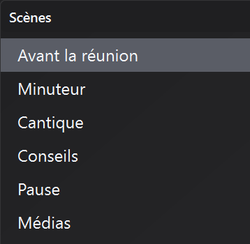
Types de calques disponibles
Lorsque vous appuyez sur + dans le panneau Calques, JW Time affiche les types d'éléments que vous pouvez ajouter à la scène.
Certains niveaux lisent les données réelles de la réunion et les modifient automatiquement ; d'autres sont utilisés pour construire la mise en page graphique.
Il n'est pas pratique d'afficher toutes les propriétés de chaque niveau dans le manuel, car le panneau des propriétés change en fonction de
au type sélectionné. Vous découvrirez ici ce que fait chaque niveau et quand l’utiliser.
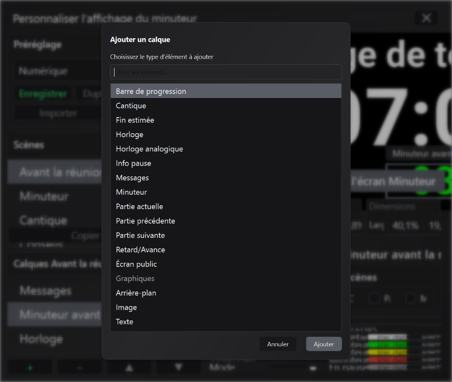
Niveaux dynamiques principaux
Timer: affiche le temps de l’intervention active. Il peut être défini comme compte à rebours ou compteur progressif.
Chanson: Afficher les informations sur la chanson lorsque la scène concerne une chanson.
Messages: affiche les messages envoyés depuis la fenêtre principale, à la fois en plein écran et en format partiel.
Horloge: Affiche l'heure numérique.
Horloge analogique- Ajoute une horloge graphique personnalisable.
Informations sur la réunion
Partie actuelle: Affiche le titre de la partie actuelle.
Partie suivante: affiche la partie suivante, utile pour préparer le changement.
Pièce précédente: affiche des informations sur la pièce qui vient de se terminer, lorsque le layout l'exige.
Fin estimée- Affiche l'heure de fin calculée par l'application.
Delay/Early: affiche le delta par rapport à l'heure programmée.
Infos pause: affiche les informations relatives aux pauses ou au temps technique.
Barre de progression: affiche graphiquement la progression du temps.
Calques graphiques gratuits
Arrière-plan: ajoute une boîte colorée, utile pour créer des bandes, des zones de contraste ou des conteneurs visuels.
Texte: ajoute un texte fixe personnalisé.
Image: Ajoute un logo ou une image décorative.
Arrière-plan, Texte et Image les couches peuvent être ajoutées plusieurs fois.
Pour les autres niveaux, si un élément du même type existe déjà, l'éditeur vous propose de le lier à une autre scène
ou pour en créer un indépendant si nécessaire.
Modification de la mise en page
Dans l'éditeur vous pouvez éditer les calques présents dans la scène sélectionnée.
Pour chaque calque, vous pouvez modifier la position et la taille de trois manières :
avec la souris, en déplaçant ou en redimensionnant la boîte dans l'aperçu
avec le clavier, en utilisant les flèches pour la déplacer
avec les valeurs de Position et de Taille affichées sous l'aperçu
Les valeurs X et Y contrôlent la position du calque.
Les valeurs Largeur et Alt contrôlent la taille du calque.
Toutes ces valeurs sont exprimées en pourcentage.
Dans le panneau des calques, vous pouvez également gérer lesordre de superposition: chaque niveau peut
rester au-dessus ou en dessous des autres, en déterminant lequel apparaît au premier plan en cas de chevauchement.
Vous pouvez modifier l'ordre en faisant glisser les calques dans la liste ou en utilisant les boutons
▲ et ▼ en dessous.
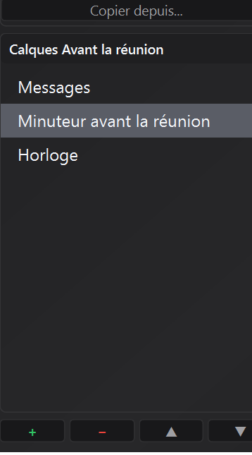
Déplacer, redimensionner et ordonner les calques
Après avoir sélectionné un niveau, vous pouvez :
faites-le glisser avec la souris pour le déplacer dans l'aperçu
utilisez les flèches du clavier pour ajuster sa position (flèches: 0,5% — Changement: 2,0% — Ctrl: 0,1%)
faites glisser les bords ou les coins du cadre pour le redimensionner
Sous l'aperçu, vous trouverez les commandes numériques X, Oui, Largeur et Alt
pour ajuster la position et la taille avec précision.
Après les modifications, enregistrez la mise en page et appliquez-la. Vous pouvez rouvrir l'éditeur à tout moment pour le mettre à jour.
La fonction Messages vous permet de communiquer discrètement et clairement avec l'orateur pendant la réunion, vous permettant de
le prévenir ou lui donner des instructions sans interrompre ni perturber le déroulement de la pièce. Des messages apparaissent à l'écran
du compteur de temps, afin que l'orateur les voie en temps réel sans distractions.
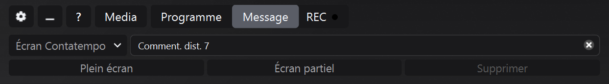
6.1 · Message plein écran
Cliquez dans la zone où il est indiqué Insérer un message.
Saisissez le texte.
Appuie sur Plein écran → le texte apparaît en plein écran sur le moniteur Minuteur.
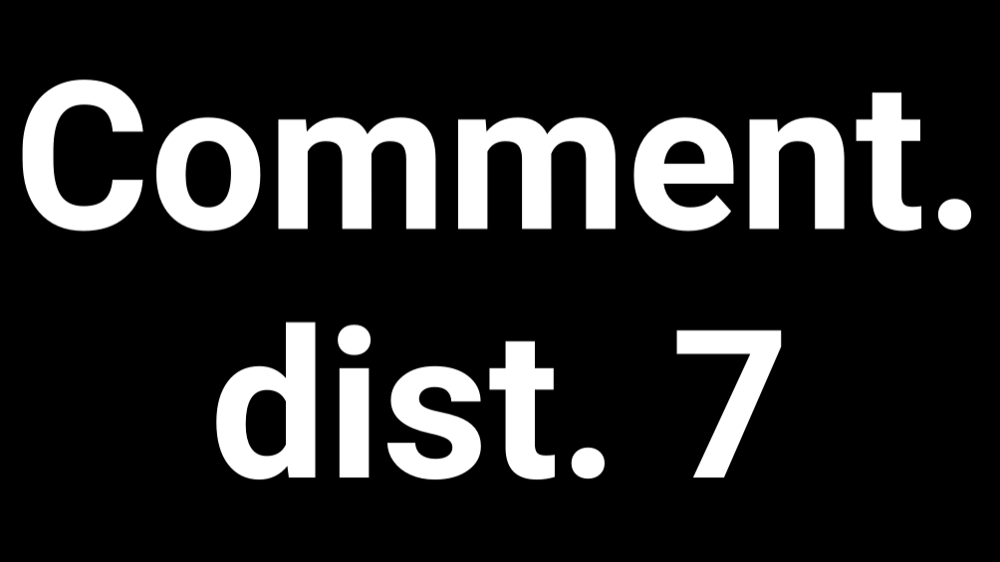
6.2 · Message d'écran partiel
Cliquez dans la zone où il est indiqué Insérer un message.
Saisissez le texte.
Appuie sur Écran partiel → le texte apparaît dans la fenêtre Minuteur sans la recouvrir complètement, permettant à l'orateur de voir à la fois le message et le timer.
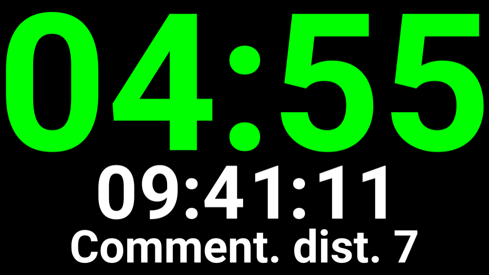
6.3 · Compteur de temps miroir
Lorsque vous envoyez un message, une fenêtre d'aperçu redimensionnable et mobile apparaît automatiquement et affiche
exactement ce que l'orateur voit sur le moniteur Minuteur. Cela vous permet de vérifier l'affichage en temps réel
du message et du minuteur.
7 · Bouton REC et panneau d'enregistrement ↑ Sommaire
Le bouton REC Il se trouve dans la barre inférieure, à côté de Programme et Message. Le point à côté du texte indique
l'état de l'enregistrement (attente, actif, pause ou conversion MP3), tandis que le panneau REC fournit des commandes rapides
pour ouvrir le dossier JWTimeREC, gérer les enregistrements manuels et surveiller les niveaux audio du PC et du microphone.
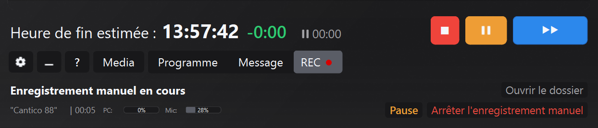
7.1 · Indicateurs et états des boutons
En attente: le point reste gris et le panneau affiche "En attente" / "Aucun enregistrement actif".
Enregistrement en cours: le point devient rouge clignotant et le panneau affiche "Enregistrement en cours" avec le titre et le timer de la partie.
Pause: le point passe à l'orange ; les enregistrements sont suspendus et peuvent être repris.
Conversion MP3: le point devient bleu et le bouton reste désactivé jusqu'à ce que l'export du fichier soit terminé.
7.2 · Commandes rapides REC
Le panneau REC rassemble les commandes à utiliser sans saisir les paramètres :
Ouvrir le dossier: ouvre directement le répertoire JWTimeREC contenant les enregistrements.
Activer/Désactiver l'enregistrement: activer ou arrêter l'enregistrement manuel sans entrer les paramètres.
Pause/Reprise: bouton visible pendant l'enregistrement pour suspendre temporairement l'audio (ex. prières) et le reprendre sur le même fichier.
Détails en ligne: le titre de la ligne active et la durée mise à jour apparaissent sous le statut.
Messages automatiques: indique immédiatement quand l'enregistrement est désactivé ou lorsqu'une conversion est en cours.
7.3 · Zone de basculement avec niveaux audio
Lorsque vous ouvrez REC, un panneau toujours visible apparaît dans la barre inférieure avec l'état d'enregistrement et le compteur audio.
Ici, vous pouvez démarrer/arrêter les enregistrements manuels, surveiller les niveaux du PC/micro et ouvrir le dossier JWTimeREC en un seul clic.
Lorsque le serveur Web est actif, vous pouvez l'ouvrir depuis un autre appareil sur le même réseau local via un navigateur.
Cela permet d'afficher le compteur de temps sur des projecteurs externes, des tablettes ou des ordinateurs, et est utile pour le président.
qui suit le chronomètre des différentes parties.
Pour la configuration complète du serveur Web, du contrôle à distance, du lien distant et du QR, voir section 15 · Connexion et serveur.
8.1 · Afficher le moniteur Web dans le réseau local
Depuis le navigateur, vous pouvez :
Afficher les minuteries et les compteurs de temps en plein écran.
Imprime la liste de lecture.
Vérifiez la progression du timing en temps réel.
Effectuez des opérations à distance sur la minuterie et le calendrier, si le contrôle à distance est activé.
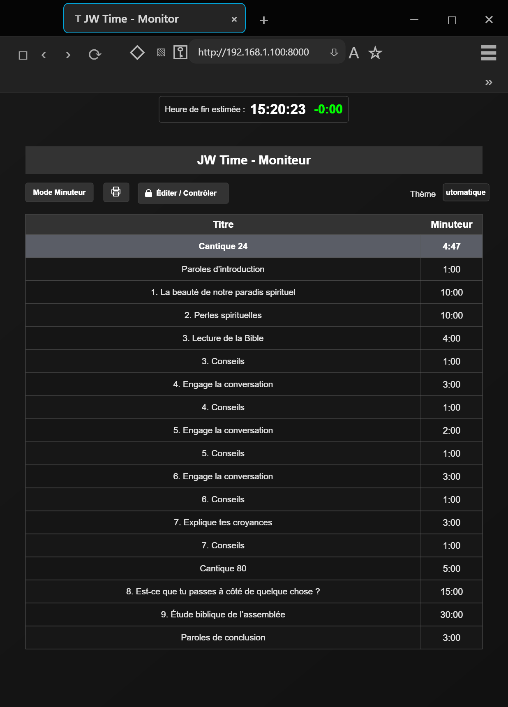
8.2 · Contrôler la minuterie et le programme depuis le navigateur
Si la télécommande est activée, depuis le navigateur vous pouvez intervenir sur la minuterie et le programme sans être
devant l'ordinateur principal.
Les opérations disponibles dépendent des autorisations configurées et peuvent inclure :
démarrer le minuteur
mettre en pause et reprendre
arrêter
contrôler le programme/la playlist
modifier les durées ou les valeurs disponibles dans la playlist, si le rôle autorisé le permet
Vous pouvez ouvrir le serveur Web en saisissant l'adresse affichée dans l'application, ou en utilisant le QR si disponible.
Selon la configuration, différents niveaux d'accès peuvent être prévus, par exemple pour l'accès uniquement
visualisation ou pour contrôle et modification. S'il est configuré, l'accès peut nécessiter un code PIN.
8.3 · Accès à distance pour les réunions en visioconférence
Lorsque la personne qui doit suivre ou contrôler JW Time n'est pas dans le même réseau local, vous pouvez générer une liaison distante temporaire.
Ce scénario est utile pour les réunions en visioconférence, l'assistance à distance ou la gestion depuis un appareil connecté
vers un autre réseau.
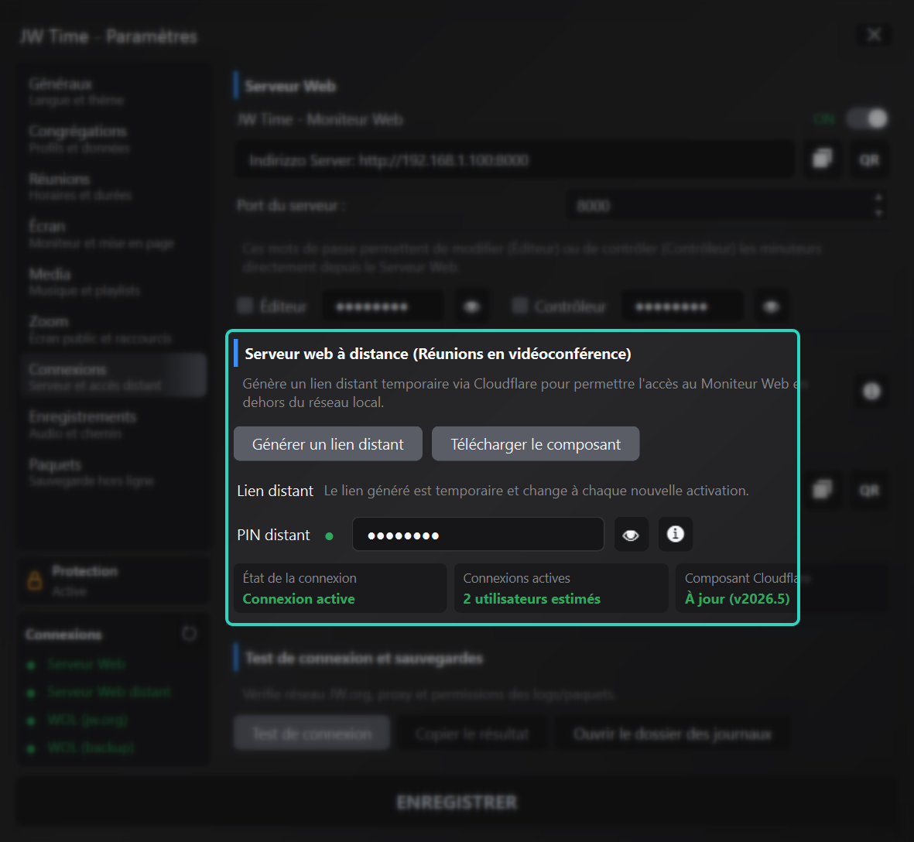
Même interface web: le lien distant ouvre le Moniteur web depuis le navigateur, comme cela se produit dans le réseau local.
Lien temporaire: le lien distant change à chaque activation et ne doit pas être considéré comme permanent.
PIN distant- Une fois configuré, protège les fonctions accessibles depuis l'extérieur du réseau local.
Utilisation en visioconférence: permet à toute personne suivant la réunion depuis l'extérieur du réseau de consulter ou vérifier le programme selon les autorisations définies.
La partie opérationnelle est configurée dans la section 15.2 · Serveur web distant.
Les paramètres de Zoom restent séparés : Zoom gère le partage et les raccourcis,
tandis que le lien distant concerne le Web Monitor.
Partie II · Panneaux de paramètres
Dans cette partie, vous pouvez configurer le comportement de l'application : paramètres généraux, profils de congrégation, réunions,
Écran du compteur de temps, médias, zoom, moniteur Web et serveur, enregistrements et sauvegarde et restauration.
Sélectionnez la langue: changez la langue de l'interface.
Langues du programme: définit dans quelle langue télécharger ou afficher le planning hebdomadaire.
Sélectionnez le thème: définissez le thème graphique de l'application.
Échelle de l'interface: adapter la taille du texte et des contrôles ; le changement s'applique après le redémarrage.
Format horaire: alterne le format 24h et le format 12h AM/PM.
Gestion du timer
Pause auto: insère automatiquement une pause entre une partie et la suivante lorsque vous appuyez sur Démarrer/Suivant.
Afficher la colonne Fin: affiche dans le tableau du programme l'heure de fin prévue de la partie en cours et des parties suivantes, calculée en temps réel à partir de l'heure actuelle, des minuteurs restants et de l'écart accumulé.
Nouveautés
Afficher les nouveautés au démarrage: ouvre un résumé concis des fonctionnalités introduites dans l'application, afin que ceux qui utilisent JW Time puissent rapidement découvrir ce qui vaut la peine d'être essayé.
Vous pouvez le désactiver lorsque le groupe connaît déjà la version installée.
Ce panneau vous permet de gérer les profils de congrégation. Chaque profil peut maintenir des configurations dédiées,
Ainsi, JW Time peut s'adapter à différents contextes sans avoir à reconfigurer les fenêtres, les médias et la mise en page à chaque fois.
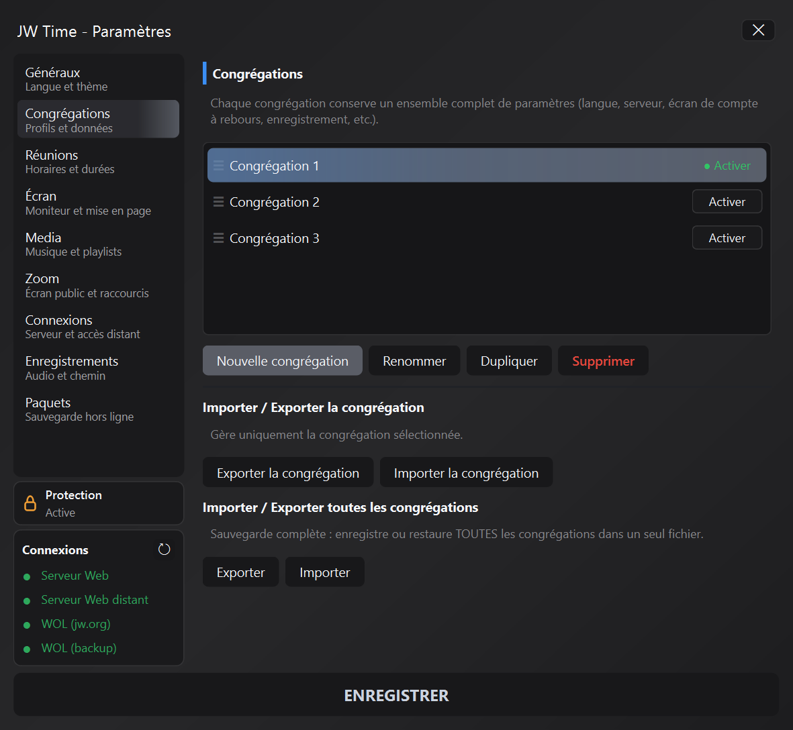
Profils de congrégation
Liste de congrégation: affiche les profils disponibles. Chaque profil conserve sa propre langue, son serveur, ses écrans, ses enregistrements, ses médias et ses paramètres.
Nouvelle congrégation- Créez un profil distinct à configurer.
Renommer: change le nom du profil sélectionné sans perdre les paramètres.
Dupliquer: crée une copie du profil courant, utile lorsque deux configurations sont similaires.
Supprimer: supprime le profil sélectionné lorsqu'il n'est plus nécessaire.
Import / Export
Export congrégation: enregistre uniquement le profil sélectionné.
Importer une congrégation: charge un profil préalablement exporté.
Exporter- Crée une sauvegarde complète de toutes les congrégations.
Importer- Restaure une sauvegarde contenant plusieurs congrégations.
11 · Réunions (minuterie de début de réunion) ↑ Sommaire
Ce panneau est utilisé pour programmer le compte à rebours de début de réunion sur l'Écran Public.
Vous définissez le jour, l'heure et l'avance (en minutes) que vous souhaitez faire
lancer le compte à rebours.
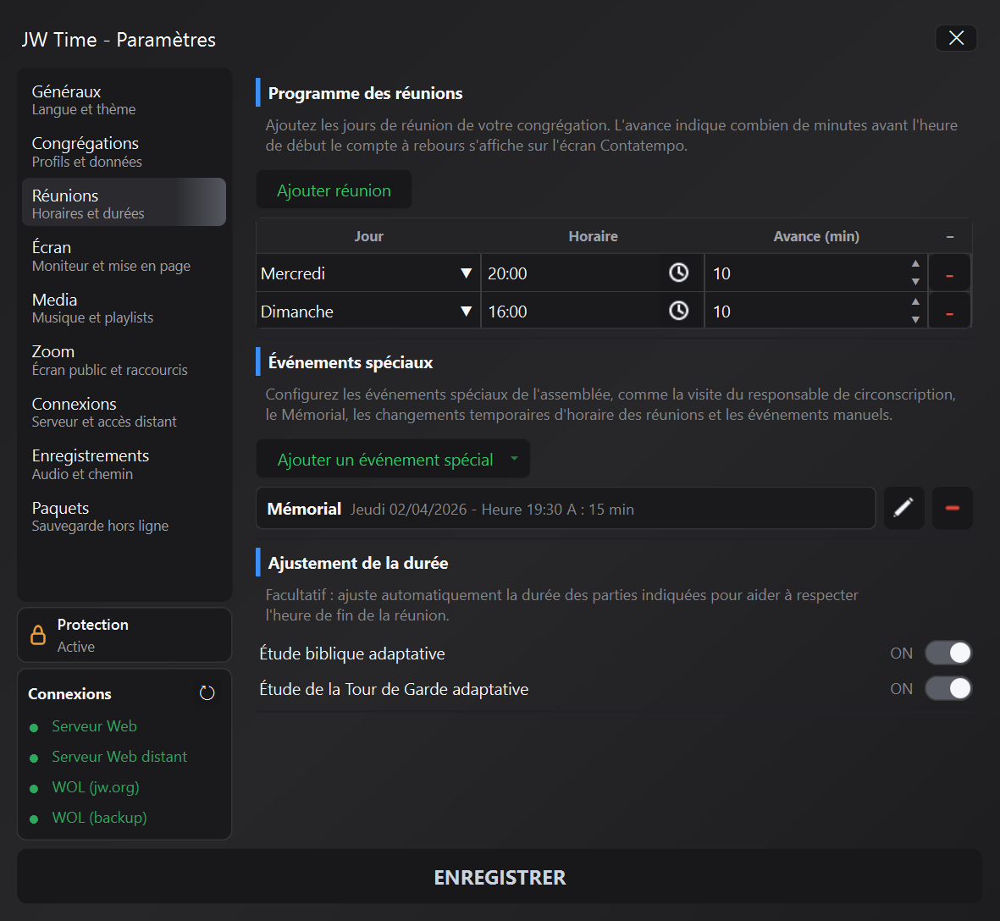
11.1 · Planification (Jour · Heure · Avance)
Ajouter une réunion: insère une nouvelle ligne dans le planning.
Jour: choisissez le jour de la semaine où se tient la réunion.
Heure: définissez l'heure de début de la réunion.
Avance (min): combien de minutes avant l'heure définie le compte à rebours doit apparaître sur l'Écran Public.
-: supprime la timeline qui n'est plus nécessaire.
11.2 · Événements spéciaux
Ajouter un événement spécial: Créez des événements tels qu'une visite du surveillant de circonscription, un mémorial ou des événements manuels.
Visiter SC: appliquer le règlement et les horaires dédiés à la visite.
Mémorial- Enregistrez un rendez-vous spécial avec une date et une heure spécifiques.
Modifier / supprimer: les boutons de droite permettent de mettre à jour ou de supprimer l'événement.
11.3 · Adaptation du temps
Étude biblique adaptative- Ajuste automatiquement l'étude biblique de la congrégation pour aider à respecter l'heure de fin.
Étude adaptative Watchtower: appliquez la même logique à l'étude Watchtower.
Remarque : les heures de début correspondent au compte à rebours public ; l’heure de fin estimée dépend plutôt du calendrier et des éventuels ajustements de durée.
Ce panneau rassemble les paramètres dédiés à l'écran Compteur de temps et à l'Écran Public. De là, vous pouvez
choisir où afficher l’information, comment la présenter et quels éléments rendre visibles lors de la réunion.
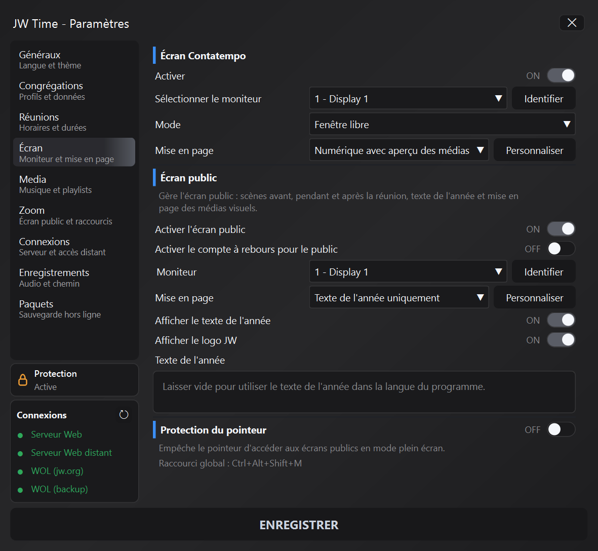
Activer: active ou désactive l'écran du compteur de temps.
Sélectionnez le moniteur: choisissez le moniteur ou la fenêtre dans laquelle afficher le compteur de temps.
Identifier: affiche une référence sur le moniteur sélectionné, utile lorsque plusieurs écrans sont connectés.
Mode: définit la manière dont le compteur de temps doit être ouvert, par exemple sous forme de fenêtre libre.
Fond transparent: Rend la fenêtre transparente lorsque le mode le permet.
Disposition: sélectionnez le préréglage graphique de l'écran du compteur de temps.
Personnaliser: ouvre l'éditeur de la mise en page sélectionnée.
Écran Public
Activer l'Écran Public: active la fenêtre dédiée aux contenus visibles dans la salle.
Activer le compte à rebours pour le public: affiche le compte à rebours jusqu'au début de la réunion sur l'Écran Public.
Moniteur: Sélectionnez où ouvrir la fenêtre publique.
Disposition: choisit le preset graphique de l'Écran Public.
Afficher l'écriture de l'année: Activer ou masquer l'écriture de l'année.
Afficher le logo JW: Afficher ou masquer le logo dans la scène publique.
Texte d'écriture de l'année: permet d'insérer un texte personnalisé ; s'il reste vide, l'année est utilisée dans la langue du programme.
Ce panneau gère le comportement de la fenêtre Média, le cache local et les options liées au contenu
utilisé pendant ou après la réunion.
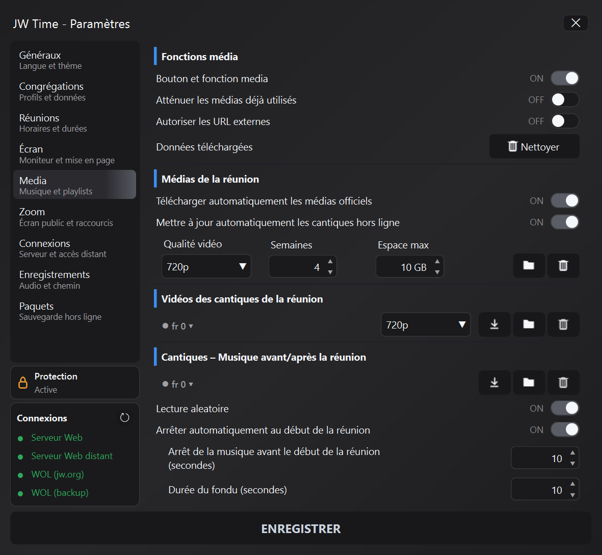
Fonctions média
Bouton et fonction média: affiche ou masque le bouton Média et active les fonctions associées.
Atténuer les médias déjà utilisés: rend les éléments utilisés plus faciles à reconnaître dans la fenêtre Média.
Autoriser les URL externes: après confirmation, autorise les URL HTTPS externes à jw.org et wol.jw.org et les affiche dans le navigateur intégré.
Rassemblement des médias
Téléchargez automatiquement les médias officiels: aide à rendre disponibles à l'avance les médias officiels de la semaine, lorsque le réseau le permet.
Mettre à jour automatiquement les chansons hors ligne: maintient à jour le catalogue des chansons téléchargées.
Qualité vidéo: choisissez la résolution des vidéos officielles.
Semaines: indique combien de semaines conserver ou préparer.
Max Space: Limite l'espace utilisé par le cache multimédia.
Dossier / supprimer: Ouvre le dossier de contenu ou nettoie les fichiers téléchargés.
Chansons et musique
Chansons vidéo de réunion: gère le téléchargement, la qualité et le dossier des chansons vidéo.
Chansons - Musique avant/après réunion: gère la musique utilisée en fond sonore.
Lecture aléatoire: Lit les chansons dans un ordre aléatoire.
Arrêt automatique au début de la réunion: arrête la musique au démarrage du programme.
Arrêter la musique avant le début de la réunion: définit combien de secondes avant d'arrêter l'arrière-plan.
Durée du fondu: ajuste le fondu audio lors de la fermeture ou du changement de chanson.
Ce panneau contient des paramètres utiles lorsque JW Time est utilisé avec Zoom ou d'autres configurations
salles qui nécessitent des commandes audio/vidéo dédiées. Les options ci-dessous alimentent les touches Zoom des contrôles
4 · Fenêtre Média.
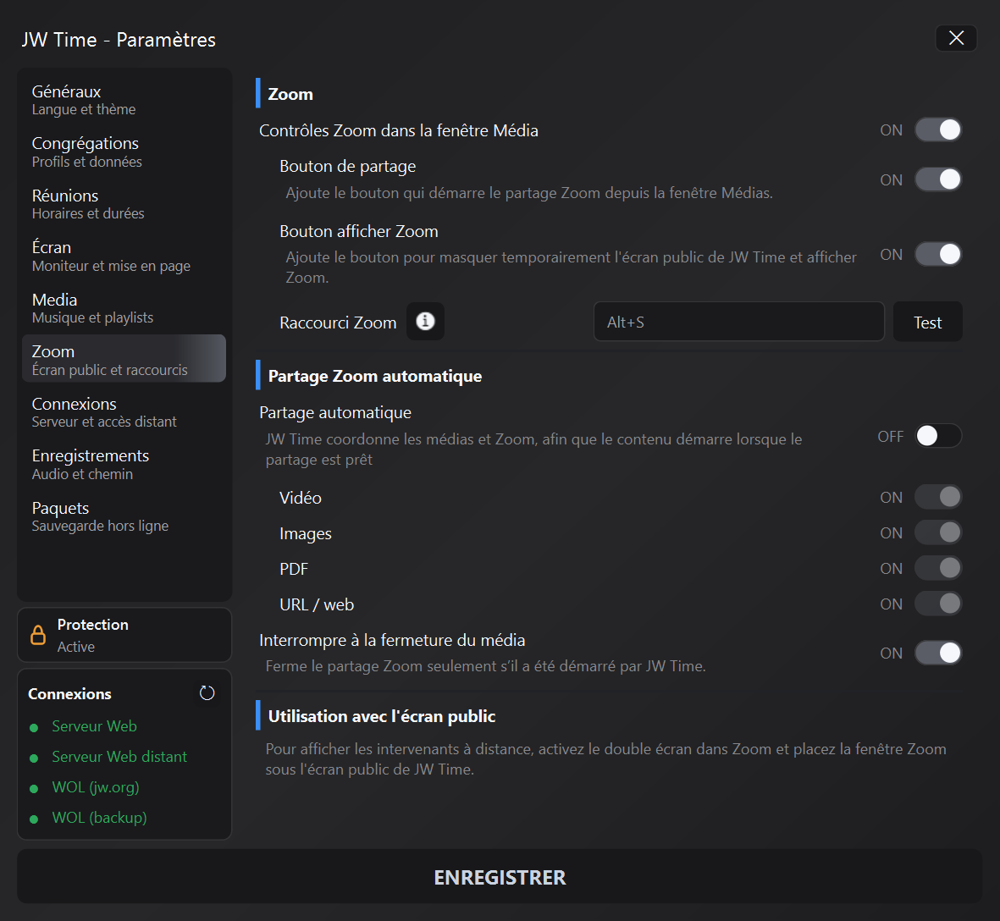
Zoom
Zoom: affichez les touches dédiées au Zoom dans la fenêtre Média.
Partage Zoom: active le bouton qui envoie le raccourci de partage vers Zoom.
Afficher le zoom au public: active le bouton qui masque temporairement l'Écran Public de JW Time pour afficher les intervenants ou la fenêtre Zoom déjà positionnée en dessous, sur le moniteur de la salle.
Raccourci de partage- Il doit s'agir du même raccourci global configuré dans Zoom pour démarrer ou arrêter le partage d'écran.
Test: Envoyez le raccourci et vérifiez si Zoom ouvre ou modifie l'état du partage.
Raccourci Zoom
JW Time ne choisit pas la fenêtre ou l'écran à partager dans Zoom à votre place : envoyez la combinaison de touches
que vous avez indiqué dans ce panneau. Pour cette raison, le même raccourci doit également être actif dans les paramètres
de Zoom, de préférence comme raccourci global. Si vous utilisez une combinaison différente dans Zoom, la touche
Partage et le mode Zoom automatique peuvent ne pas fonctionner de manière fiable.
Avant la réunion, vérifiez le flux complet : préparez le Zoom sur le moniteur public, placez l'Écran Public en dessous
la fenêtre des intervenants ou l'écran Zoom en double, essayez le raccourci avec Test puis
utilisez les commandes de la fenêtre Média.
Automatisation des médias
Démarrage automatique: lorsque la touche Zoom automatique est actif dans la fenêtre Média, démarre le partage lorsqu'un média est lu.
Interrompre à la fermeture du média: arrête le partage Zoom lorsque le média est fermé ou se termine, uniquement si le partage a été lancé par JW Time.
Pause initiale: Prépare le média à mettre en pause après le démarrage du partage.
Restaurer le focus: Renvoie le focus sur la fenêtre Média après l'action Zoom.
Utiliser avec les réunions par vidéoconférence
Si quelqu'un a besoin de consulter ou de contrôler JW Time hors ligne pendant une réunion par vidéoconférence,
il n'est pas configurable depuis Zoom : utilisez section 8.3 · Accès à distance pour les réunions en visioconférence.
Dans ce panneau ne subsistent que les raccourcis, le partage et la gestion de la fenêtre Zoom.
Ce panneau gère la connectivité de l'application : le Moniteur web et le Serveur web pour la visualisation et le contrôle depuis le navigateur,
le QR pour un accès rapide, un contrôle à distance, des tests de connexion avancés et une gestion des journaux.
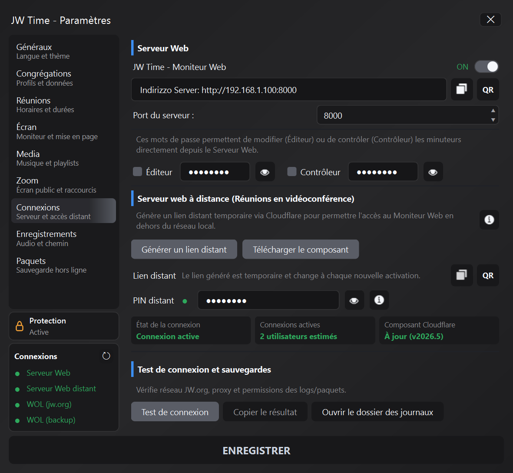
15.1 · Moniteur web et serveur Web
JW Time - Moniteur web: active ou désactive le serveur interne.
Adresse du serveur: affiche l'URL à ouvrir dans le réseau local. Dans le manuel nous utilisons une adresse générique, par exemple http://192.168.1.100:8000.
Copier l'adresse: Copie l'URL dans le presse-papiers.
QR: affiche un code QR pour ouvrir plus rapidement le Web Monitor depuis votre téléphone ou votre tablette.
Port du serveur: Définissez le port HTTP, normalement 8000.
Éditeur/Contrôleur: Activez les mots de passe pour modifier ou contrôler la minuterie et la planification à partir du navigateur. Avec le rôle de Contrôleur, le Web Monitor devient également un panneau de commande : il peut démarrer, mettre en pause, arrêter et mettre à jour les valeurs disponibles sans revenir à l'ordinateur principal.
Lorsque le serveur Web est actif, JW Time peut être ouvert depuis un autre appareil sur le même réseau local via un navigateur,
pour utiliser le Web Monitor depuis votre téléphone, votre tablette ou un autre ordinateur.
15.2 · Serveur web distant
Cette section est utilisée pour rendre le moniteur Web accessible même en dehors du réseau local, par exemple lors
réunions par visioconférence. Pour le contexte d'utilisation, voir le section 8.3 · Accès à distance pour les réunions en visioconférence;
vous trouverez ici les commandes pratiques.
Générer un lien distant: crée un lien temporaire via le composant Cloudflare lorsqu'un accès en dehors du réseau local est nécessaire.
Télécharger le composant: téléchargez le composant nécessaire à la connexion à distance.
Lien distant: Affiche le lien généré et les boutons Copier/QR.
Code PIN distant: Protège l'accès aux fonctions distantes une fois configurées.
État du lien- Indique si le composant distant, les connexions actives et Cloudflare sont disponibles.
15.3 · Contrôle à distance
Si la fonction est activée, le serveur Web peut être utilisé non seulement pour la visualisation, mais aussi pour exécuter
à distance des opérations sur le minuteur et le programme. Lorsque le rôle de contrôleur est activé, l'écran Web affiche
également les contrôles permettant d'intervenir sur les valeurs disponibles, par exemple la durée d'une partie.
Les opérations disponibles peuvent inclure :
démarrer le minuteur
mettre en pause et reprendre
arrêter
contrôler le programme/la playlist
Selon la configuration, différents niveaux d'accès peuvent être disponibles, afin de distinguer
simple consultation depuis les fonctions de contrôle ou de modification.
15.4 · Test de connexion
Test de connexion: vérifiez le réseau, JW.org, le proxy et les autorisations d'écriture.
Copier le résultat: copie le résultat du test pour assistance ou diagnostic.
Ouvrir le dossier des journaux: ouvre directement le dossier des journaux de l'application.
Fonction d'enregistrement audio des réunions, accessible depuis l'onglet "Enregistrements" dans les paramètres et depuis le bouton REC de la fenêtre principale.
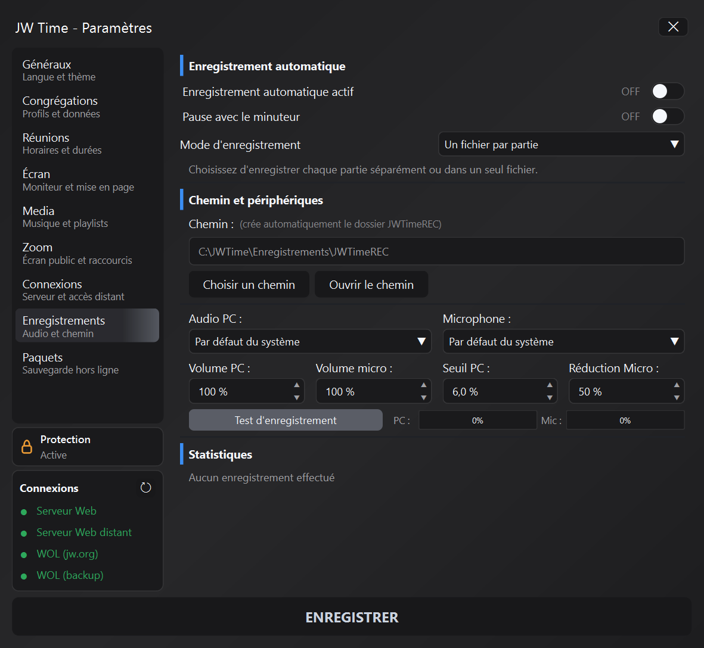
Enregistrement automatique
Enregistrement automatique actif: démarre l'enregistrement au démarrage du timer, si la fonction est activée.
Suspendre l'enregistrement lorsque la minuterie s'arrête: Met également l'enregistrement en pause pendant les pauses de la minuterie.
Mode d'enregistrement: choisissez entre un fichier par partie ou un seul fichier par session.
Chemin et périphériques
Chemin: indique le dossier dans lequel enregistrer les fichiers. Un chemin générique est indiqué dans le manuel.
Choisissez le chemin: sélectionnez le dossier de destination.
Ouvrir le chemin: ouvre le dossier des enregistrements.
PC Audio: Sélectionnez la source audio de l'ordinateur.
Microphone: Sélectionnez le microphone à enregistrer avec l'audio du PC.
Volume PC / Volume Micro: ajuste le niveau enregistré des deux sources.
PC Threshold: définit quand l'audio du PC doit être considéré comme actif.
Réduction du micro.: Abaisse automatiquement le microphone lorsque l'audio du PC dépasse le seuil.
Test d'inscription: vérifiez les appareils et les niveaux avant la réunion.
Statistiques: affiche des informations sur les enregistrements effectués.